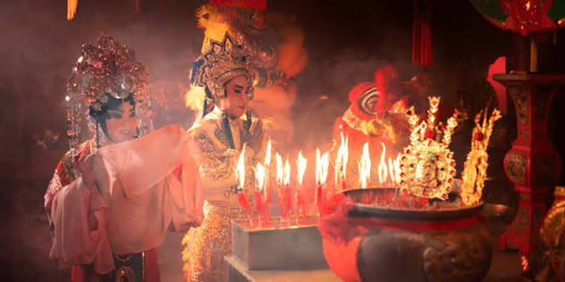

ประเพณีจีน

ประเพณีและวัฒนธรรมจีนเป็นมรดกอันล้ำค่าที่หล่อหลอมขึ้นมาจากประวัติศาสตร์ ความเชื่อ และวิถีชีวิตที่ผูกพันกับธรรมชาติและครอบครัวอย่างแน่นแฟ้น โดยส่วนใหญ่จะยึดถือตามปฏิทินจันทรคติและสะท้อนผ่านเทศกาลสำคัญต่าง ๆ ตลอดทั้งปี เริ่มต้นจากเทศกาลตรุษจีนซึ่งถือเป็นวันขึ้นปีใหม่และเป็นเทศกาลที่ยิ่งใหญ่ที่สุด โดยคนในครอบครัวจะเดินทางมารวมตัวกันเพื่อกราบไหว้เทพเจ้าและบรรพบุรุษ รับประทานอาหารมื้อค่ำร่วมกัน แจกอั่งเปา และชมการเชิดสิงโตเพื่อความเป็นสิริมงคล ต่อเนื่องไปยังเทศกาลเช็งเม้งในช่วงฤดูใบไม้ผลิอันเป็นวันแห่งการแสดงความกตัญญูที่ลูกหลานจะเดินทางไปทำความสะอาดตกแต่งสุสานและเซ่นไหว้บรรพบุรุษผู้ล่วงลับ ถัดมาคือเทศกาลไหว้บ๊ะจ่างที่โดดเด่นด้วยกิจกรรมการแข่งเรือมังกรอันตื่นตาตื่นใจและการรับประทานบ๊ะจ่างเพื่อรำลึกถึงความซื่อสัตย์ของชวีหยวนกวีผู้ยิ่งใหญ่ และปิดท้ายด้วยเทศกาลไหว้พระจันทร์ในช่วงฤดูใบไม้ร่วงซึ่งเป็นสัญลักษณ์ของการเก็บเกี่ยวและความกลมเกลียว โดยสมาชิกในครอบครัวจะกลับมารวมตัวกันอีกครั้งเพื่อชื่นชมความงามของพระจันทร์เต็มดวงและแบ่งปันขนมไหว้พระจันทร์รสเลิศร่วมกัน ซึ่งประเพณีทั้งหมดนี้ไม่เพียงแต่เป็นกิจกรรมเพื่อความรื่นเริงเท่านั้น แต่ยังเป็นกุศโลบายในการสร้างความรัก ความสามัคคี และการสืบทอดคุณธรรมความกตัญญูจากรุ่นสู่รุ่นอย่างเหนียวแน่น